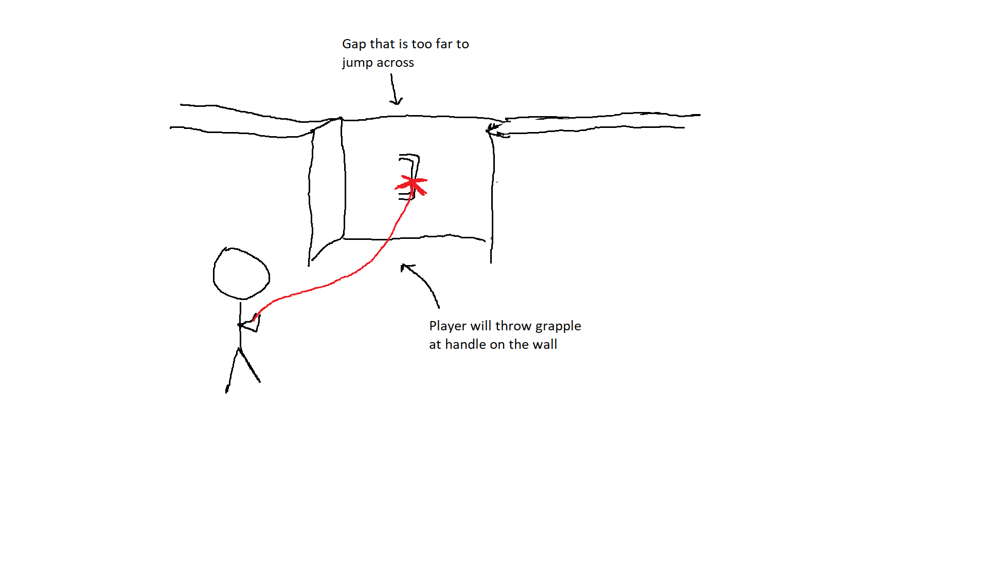
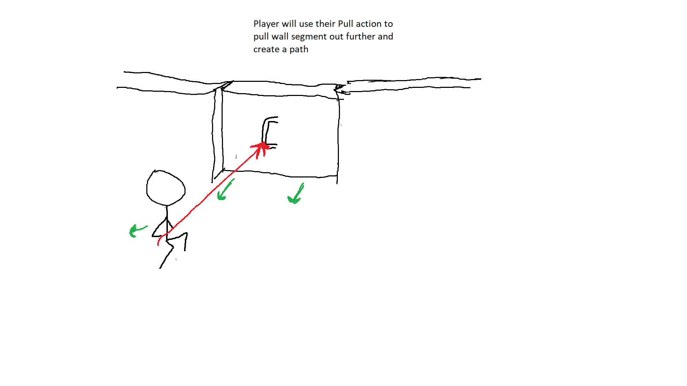
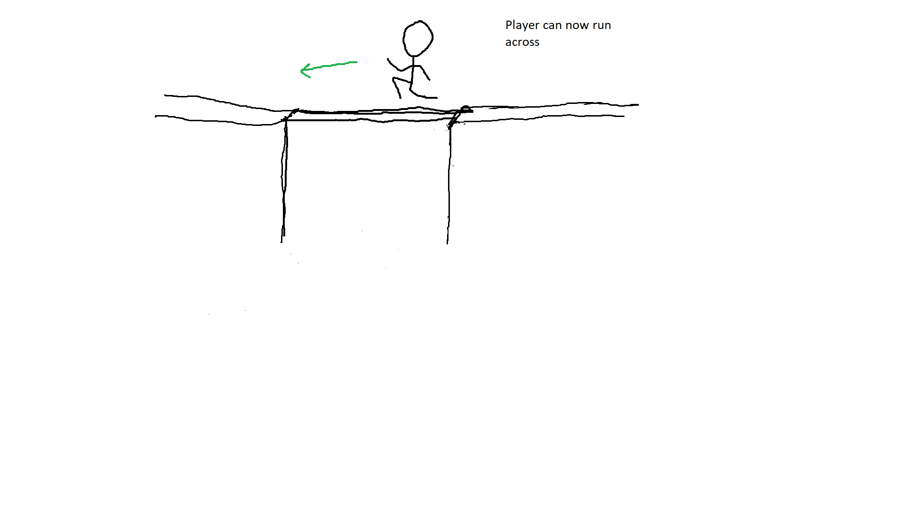

I am a game designer with a B.A. in Game Design, specializing in Unreal Engine, C++, and Blueprints.
While I focus on combat and enemy mechanics, my experience spans various genres, including
multiplayer,
mobile, and RPGs. If you're interested in collaborating, please contact me.
As part of the development team for Pantheon Rift, the following contributions were made to enhance
the gameplay and systems:
Animation Retargeting: Adapted animations for different
character meshes and skeletons using Unreal Engine's retargeting tools, ensuring consistent and
high-quality animations across all character models.
Attack Data Management: Created data assets for weapon
attacks, including variables for animation montages, speeds, and sound effects. Integrated these
assets into weapon blueprints to streamline combo setups.
Combat Mechanics Development: Implemented melee and ranged
weapon systems, including equipping, attacking, and blocking mechanics. Contributed to features
inspired by souls-likes and casual shooters.
Dodge System: Developed a dodge mechanic using vector math for
directionality, with root motion for smooth animations and invincibility frames (I-frames) for
balanced gameplay.
Poise and Stagger System: Designed a poise mechanic to prevent
player stagger, integrated poise damage into weapon interactions, and implemented regeneration
with visual feedback systems.
AI Spawning Systems: Optimized AI spawning processes by
developing dynamic spawning mechanics, allowing creatures like sheep to spawn within specified
radii with randomized positions and orientations.
Solace
Designer and Programmer - Action RPG
Trailer Video
Project Goals
I wanted to create an RPG that gave the player a wide range of abilities without forcing them to
choose between a few and still be executable within a few button presses.
Inspired by Final Fantasy 14, I used trigger buttons as gates for ability usage, enabling more
abilities with minimal button clutter.
Another goal was to design enemies that worked together, using timed attacks and formations.
Ground telegraphs created engaging scenarios, requiring the player to solve puzzles in combat
and align with level design.
Accomplishments
Primary Developer of Ability and Combat Systems: Led the design
and implementation of the game's intricate ability system and engaging enemy attack system.
Innovative Targeting System Development: Developed the Priority
Target System, integrating stance-based targeting for enhanced combat dynamics.
Hot Bar System Optimization: Streamlined the Hot Bar by reducing
slots and centralizing logic for improved gameplay interaction.
Elemental Stances Mechanic Implementation: Created and refined the
Elemental Stances system, enhancing combat strategy and player choice.
Teleportation System Overhaul: Redesigned the teleportation
mechanic from an ally-based to a player-centric system, increasing player control and game
narrative integration.
Enemy Ability and Formation System Design: Crafted dynamic enemy
encounters using timed attack abilities and formation tactics.
Priority Target System
In my research on targeting systems, I observed that most games use direction and distance for
manual enemy lock-on.
Innovating on this, I considered expanding targeting factors to include abilities and elemental
stances.
This led to the development of the Priority Target System, which offers both a traditional
manual lock-on with a focus camera
and a 'no lock' option where the system aids the player based on their current stance.
Stance Specifics
Base/Fire/Water: Auto-attack and
close distance to the nearest enemy. Lightning: Prioritize interrupting enemy casts, then target
distant foes. Wind: Focus on enemies within AoE range.
System Benefits
Reduces target cycling.
Guides new players on stance and ability usage.
Allows player choice for targeting priority.
Elemental Stances
Players can switch between the following stances to enhance strategy and combat choices:
Fire: High single target damage. Water: Crowd control. Lightning: Ranged abilities for distant foes. Wind: Area of effect attacks.
Critical Hits
Critical hits in Solace aren't random. Instead, they're triggered by ability synergies. For
instance, applying the Burn status and following up with a Water attack creates an explosion for
a critical hit. Critical hits throw enemies off balance, with bold text feedback for players. In this example, Fire abilities followed by Water create dense steam signalling to the player that something has happened.
Hot Bar
The Hot Bar allows quick access to abilities segmented by gamepad triggers for intuitive
gameplay. Originally designed with 16 buttons, playtesting revealed that a more streamlined
approach was needed. I reduced the Hot Bar to 8 buttons, maintaining the game's core goals while
minimizing UI clutter and ensuring each ability was distinct and meaningful.
The Hot Bar tracks cooldown times, ability resource costs, and ability status, expanding as
needed and clearly indicating locked abilities, providing players with an intuitive and
efficient interface.
Player Ability System
Inspired by Final Fantasy 14, I aimed to create an ability system that makes players feel
powerful and in control. The design mirrors the concept of having a "rotation," where players
can maximize damage by finding the optimal arrangement and usage of abilities with their
cooldowns.
The system includes abilities that inflict debuffs and damage over time (DoT). Players need to
keep their DoT abilities active and maintain debuffs on enemies, then use finishers to maximize
their damage output. This approach reflects the strategic rotations found in MMOs, encouraging
players to think critically about their ability usage.
The abilities in "Solace" feature a horizontal progression system. Players collect materials
from fallen enemies to upgrade abilities, enhancing their strength and adding new effects. For
example, upgrading the "Bubble" ability traps enemies in water and deals damage over time.
When designing "Solace," I faced constraints due to my limited skills in animation and VFX,
which led to removing some planned skills. To tackle this, I creatively used available
marketplace assets, tailoring animations to fit various abilities and managing the budget for
essential animations.
Teleportation System
The teleportation feature in Solace allows players to move instantly to specific locations
within a defined range. This mechanic is vital for dodging enemy attacks and uncovering hidden
paths, offering players a dynamic tool for both combat and exploration. By enhancing mobility,
it maintains player engagement and enables strategic gameplay.
Initially, the teleportation system was tied to an ally character, which restricted movement and
limited its effectiveness. To better align with the game's elemental theme, I reimagined
teleportation as a lightning-based ability. This redesign not only integrated it into the game's
world but also empowered players with greater control. The mechanic now allows players to
respond quickly to enemy formations and reposition strategically during combat.
The system also includes a unique mechanic called "Teleport Strike," where players can teleport
behind enemies and deliver a precise counterattack. This ability emphasizes timing and reflexes,
adding depth to combat interactions and reinforcing the sense of mastery in gameplay. By
leveraging existing assets and systems, I crafted a responsive and thematic teleportation
mechanic that enhances both the narrative and the player's experience.
Enemy Formation System
I aimed to design enemies that challenge players both individually and as coordinated groups,
enhancing combat dynamics and immersion. By demonstrating enemies working together, players face
strategic challenges that require quick thinking and precise movement. A key design philosophy
behind the enemy formations is to simulate intelligent behavior you would see with real squads
of soldiers. Enemies are programmed to work together, creating dynamic encounters.
The combat system features enemies with timed attack abilities, highlighted by ground telegraphs
for player anticipation. Telegraphing attacks becomes crucial when multiple enemies use
abilities simultaneously or as part of formations, creating small "puzzle" encounters that
require strategic player responses.
Ensuring that the difficulty level remains fair while still challenging is crucial. To achieve
this, enemies display the names of the abilities they are using. This allows players to memorize
and recognize incoming attacks, giving them the opportunity to anticipate and react
appropriately in future encounters. The design philosophy focuses on providing clear feedback
and opportunities for the player to learn and adapt.
The coordinated enemy attacks are designed to encourage players to think strategically. Players
must analyze enemy formations, predict their movements, and respond with appropriate abilities.
This promotes a deeper level of engagement and rewards players for mastering the game's
mechanics.
Combat Design
Sora’s Keyblade in Kingdom Hearts sets a high standard for RPG combat with its weighty and
impactful animations, creating a sense of momentum and realism in every swing. Inspired by this,
I aimed to replicate that satisfying feel in my game’s basic attacks. Through careful animation
selection and adjustments, I fine-tuned the motions to deliver a similar sense of impact,
ensuring each strike feels fluid, powerful, and rewarding for the player.
Palette Path
Designer and Programmer - Mobile Puzzle Game
Trailer Video
Project Goals
Develop and release a mobile game, covering all stages from pre-production to launch, while
advancing skills in blueprint coding.
The game was designed to be educational and appropriate for younger players, with mechanics that
combine colors and solve puzzles
to enhance cognitive and learning skills.
Accomplishments
Engine Optimization for Level Design: Enhanced game engine to
speed up level creation by 80%, optimizing development workflow.
Save Data System Implementation: Developed a save system,
ensuring player progress is retained.
Level Streaming and Memory Management: Implemented level
streaming techniques and memory management practices,
ensuring optimal game performance and efficiency.
Game Mechanics Development: Designed, iterated, and implemented
'Bomb' and 'Fan' mechanics.
Puzzle Design: Crafted complex puzzles, improving player
engagement and challenge.
Game Concept
My vision for the game was to create a simple puzzle game that is easy to pick up, set aside,
and be a source of mental stimulation.
While younger audiences may be challenged by the color combining, any age can enjoy the puzzle
aspect. I committed to a player-friendly
approach, avoiding microtransactions and integrating advertisements fairly. Players can either
watch ads to regain lives or wait for them to regenerate.
Educationally, the game introduces younger players to color theory, particularly in creating
secondary colors, while stimulating
cognitive skills through thoughtfully designed puzzles. This blend of simplicity, educational
value, and ethical design forms the game's core.
Optimized Engine for Level & Puzzle Creation
I optimized the game engine by developing a map generator actor, enabling the creation of
dynamic X by X grids.
This tool streamlined level design, allowing for rapid customization of tile types, colors, and
layouts. It also facilitated the creation
of gaps and the designation of starting tiles, significantly enhancing the efficiency and
flexibility of level development.
Key Features:
- Starting Tile: Marks the puzzle's starting point for the player.
- Blob Tile: Restores health, resizes the player's blob, and can change its
color.
- Bomb Tile: Gives the player a bomb that can be detonated at will.
- Fan Tile: Spreads the player's blob color to all tiles in a straight line.
Mechanics
The game features multiple tile mechanics, enriching the gameplay with strategic elements that
encourage players to think creatively to solve puzzles.
Bomb Mechanic: Players acquire a bomb by moving onto its tile, which can be
detonated at their discretion.
The explosion spreads the player's blob and color to adjacent tiles, programmed using a trace
function to identify and alter neighboring tiles' colors.
Smaller blobs interpolate to the center of each affected tile for a visually impactful effect.
Fan Mechanic: This tile blows the player's color across a straight line of
tiles, excluding any between the player and the fan.
Traces identify tiles in the direct line of effect, requiring players to plan their moves
carefully for tactical advantage.
Progression
In Palette Path, I designed the gameplay progression around the Introduce, Practice, and Master
pacing structure to create an engaging learning curve. Each mechanic is first introduced with
straightforward levels that allow players to grasp its functionality in isolation. This is
followed by practice levels, where players encounter the mechanic in increasingly varied and
complex scenarios, ensuring they build confidence and familiarity. Finally, I integrate multiple
mechanics together, presenting intricate challenges that truly test the player's puzzle-solving
skills. This progressive structure encourages mastery while maintaining a balance of challenge
and satisfaction, ensuring players feel rewarded for their growth and ingenuity.
Grappling Game: Combat Design
Project Goals
The primary objective of this game is to center its design around the grappling mechanic.
Drawing inspiration from iconic games like
Mario, known for its focus on jumping, and Sonic, with its emphasis on speed,
the game delivers a high-quality, immersive experience around a single core action: grappling.
Recently, grappling has been integrated as a side mechanic in many games. I wanted to explore
what a game would look like with grappling
as the main focus, particularly in combat. This concept guided my design approach.
Identifying Player Actions
To design enemies effectively, I began by identifying the possible actions players could perform
with the grappling mechanic. These
actions form the "verbs" of the gameplay and drive enemy interactions:
- Pull: Attach the grapple to an object and pull it toward the player.
- Swing: Create a rope swing to traverse areas (dependent on the grappled
object).
- Climb: Ascend when suspended over a drop.
- Spin: Rotate an attached object around the player in a circular path (object
size-dependent).
These core actions informed enemy design, with "Pull" becoming a central element of the main
combat loop. For example, enemies are
powered by batteries, and the player must pull these batteries out to defeat them.



Enemy Design Pillars
To ensure dynamic and engaging encounters, I established three key pillars for enemy design:
1. Size: Size influences the actions players can take on enemies. Larger
enemies drag the player when grappled, while
smaller enemies can be manipulated freely. Visual and gameplay feedback communicate these size
differences clearly, with height,
width, and scale exaggerated for clarity.
2. Battery Location: Enemies have batteries that power them. Identifying and
targeting these batteries is a core part
of combat. Batteries are visibly marked, giving players strategic visual cues.
3. Reaction: Enemies react uniquely when grappled. Some try to shake players
off, others become aggressive, and some
might pull the player toward them. Understanding these reactions is essential for mastery and
rewards skilled players.
Enemy Interaction Concepts
Establishing these pillars led to brainstorming various enemy interactions, creating unique
challenges for players. Examples include:
- An enemy with a constantly shifting battery location.
- An enemy that hides its battery, revealing it only during attacks.
- An enemy that spins uncontrollably when grappled, damaging the player unless they detach.
- An enemy that cuts the player's grapple wire, forcing players to prioritize them.
- An enemy that counters the player's pull action by grabbing the wire and pulling the player
toward it.
- An enemy that detaches smaller enemies for the player to spin as a weapon.
- An enemy that manipulates the environment, creating hazardous areas and forcing players to
stay airborne.
- An enemy that retrieves detached batteries, requiring players to act quickly.
Prototyping Enemies
With the design concepts in place, I began prototyping the first enemy. This prototype features
a constantly moving battery that
spins in a slow, continuous motion. Players must stay focused on the battery's location during
combat, adding intensity and challenge.
Huntsman Placeholder
Designer and Programmer - Horror Game
This is a placeholder for the Huntsman project. Details about this team-based project will be
added soon.